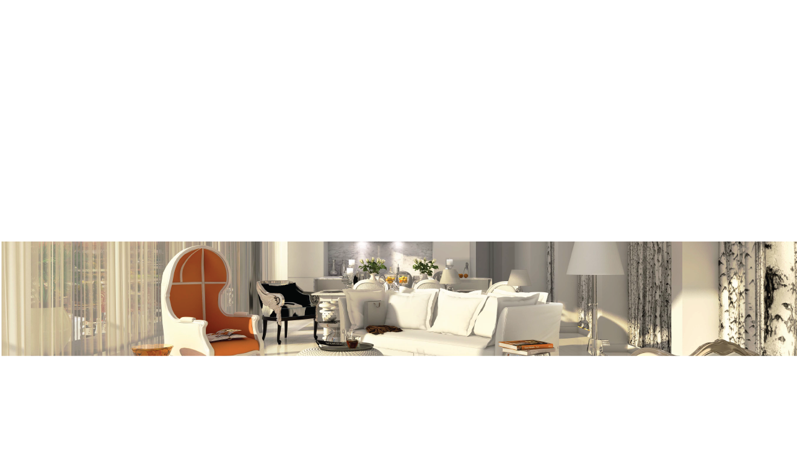
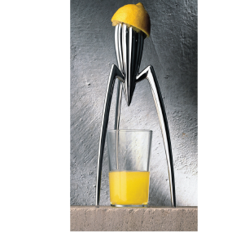
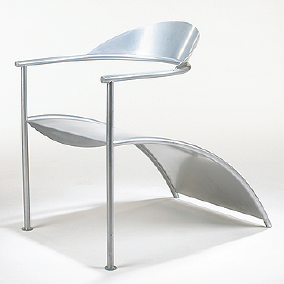
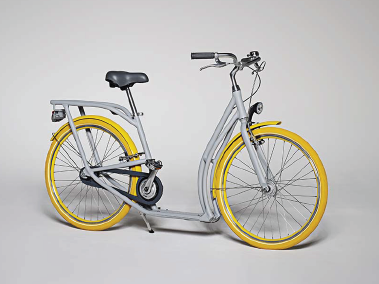

Everything that I design is

I had the dubious pleasure of hanging out in the Starck-designed Volar club in Shanghai last weekend, and my initial reaction to his statement was: yeah, right! I've never really liked his pompose celebrity design. But then I read his quote again in the context of the whole interview and realized: he is right, actually. In fact, his thoughts are so poignant and humbling. Naturally, designers (and the watchdogs of 'design thinking' in particular) cried foul and tried to reconcile Starck's design nihilism with their own beliefs. David Armano , for example, refer to the democratization of design.

Armano: No, design isn't dead, especially the really good design that adds value to our lives. But the notion of design's gatekeepers may need some additional thought as more of us begin to act like 'professionals' and take on the sacred role of design.
ZEIT: Monsieur Starck, you have designed everything, from toothbrush to spaceship. What do humans really need?
Philippe Starck: The ability to love. Love is the most wonderful invention of mankind. And then, one needs intelligence. Mankind, as opposed to animals, has managed to create a civilization based on intelligence. For this reason, no human can afford to not work on their intelligence. And humour, humour is important.
ZEIT: And you can't think of something material?
Starck: We don't need anything material. It is more important to develop one's own ethic, and to stick to these rules. There is nothing else one would have to worry about.
ZEIT: You can't be serious. Isn't there so much else one needs in order to survive?
Starck: If you want to talk about objects: one certainly needs something to light a fire.
ZEIT: Can you think of anything else?
Starck: A pillow maybe, and a good mattress.
ZEIT: So why, then, have you become an industrial designer in the first place?
Starck: That is an interesting question. And I haven't found an answer to it for myself yet. Look, I have designed so many things without ever really being interested in them. Maybe all these years were necessary for me to ultimately recognize that we, after all, don't need anything.
"We always have too much."
ZEIT: So all the things you have created -- unnecessary?
Starck: Design, structurally seen, is absolutely void of usefulness. A useful profession would be to be an astronomer, a biologist or something of that kind. Design really is nothing. I have tried to install my designs with a sense of meaning and energy, and even when I tried to give my best it was still in vain.
ZEIT: So this is the balance you strike of all your creating?
Starck: Those people with more intelligence than me would have gotten to this point much earlier. Perhaps I wasn't smart enough and had to learn it the hard way. Ever from the beginning I had the feeling that ultimatively, product design was useless. It is because of this that I have tried to change this job into something else; into something that's more political, more rebellious, more subversive. So maybe the most important thing that I have created is not a new object, but a new definition for the word "designer."
ZEIT: You said that we are undergoing a transition towards Postmaterialism. What does this mean?
Starck: Society is pursuing a strategy of dematerialization: it is more and more about intelligence and less about material. Take a computer, for example. In the beginning, computers were big as a house. Now there are computers in the size of only a credit card. In ten years from now they are going to be in our bodies - bionics. In fifty years from now, the concept of computers will have dematerialized itself.
ZEIT: So what else would designers create then?
Starck: There won't be any designers. The designer of the future will be the personal coach, the fitness trainer, the nutritionist. That's all.
ZEIT: You have often stated that it was your goal to destroy design. How far have you gotten with that?
Starck: It is accomplished! When I started out, design objects were but beautiful objects. No one could afford to buy them; design stood for elitism, but elitism is vulgar.
"The sole elegance lies in multiplication."
ZEIT: Please explain this.
Starck: If one is fortunate enough to have a good idea, one has the obligation to share this idea with others. That is how democracy works. When I started to design, a good chair would cost about $1,000. Should a family that needs six chairs and a table have to pay $10,000, just to be able to have dinner? What an obscene thought. Four years ago, I designed a chair that would cost less than ten dollars. If you just strike three zeros off the price you change the whole concept of a product.
ZEIT: And yet you recently designed that motor yacht for a Russian millionaire?
Starck: Exactly this is part of my Robin-Hood concept. I do use such projects like a lab. It allows me to try out new technologies and render them useful for the mass market. For this particular yacht, I developed a hull that wouldn't cause bow washes at 20 knots. I applied this concept to a solar boat, which in turn could be the prototype for a Venetian vaporetto.
ZEIT: And you don't want to stop designing?
Starck: I do want to, for sure. I am definitely going to stop designing in two years. I will be doing something else instead, I don't know for sure. But I know that it will be a new way of expression; a weapon that will be faster, mightier and lighter than design.
"Design is really a terrible way to express oneself."
ZEIT: So you will only be switching the job.
Starck: Exactly. I have been a producer of materiality. I do feel ashamed for this. What I want to be instead now is a producer of concepts. This will be much more useful.
ZEIT: Is there any object that you like, then?
Starck: No.


